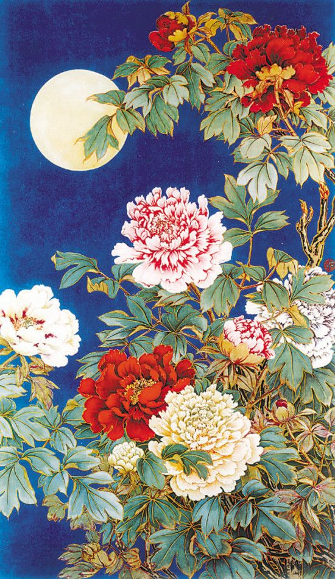
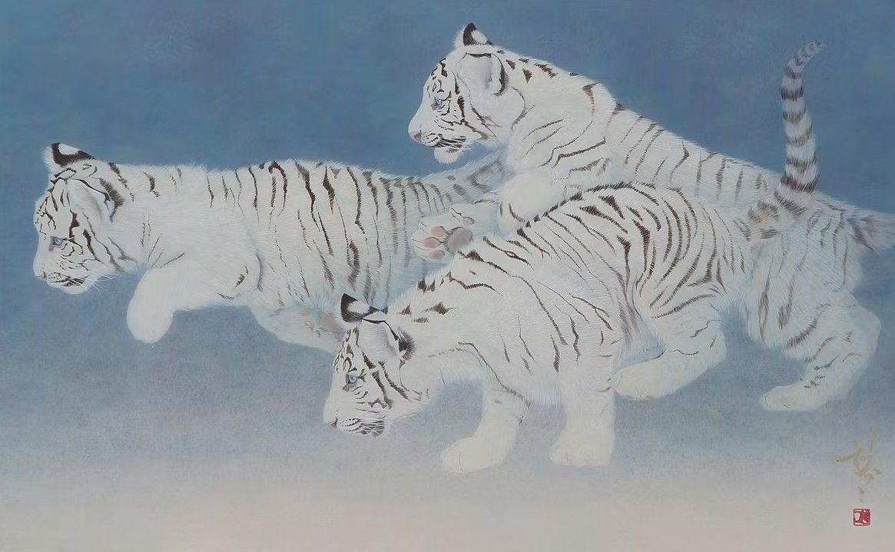

En bref
Au fil de mes études et en autodidacte, j’ai construit une base polyvalente : développement web et applicatif, administration de serveurs, automatisation et réseau. Je continue d’apprendre chaque jour, en formation comme dans mes projets perso.
Mes projets
2 réalisations

Projet phare


Rust : serveur, site & Discord
Hébergement d’un serveur de jeu moddé, dashboard web Node.js / Prisma et bots Discord pour une communauté de plus de 300 membres.
→ voir le projet
Projet perso
TD
Sound React — particules audio-réactives
Visuel de particules sur GPU dans TouchDesigner, entièrement construit par des scripts Python : analyse audio, génération du réseau et sauvegarde des réglages dans le code.
→ voir le projet